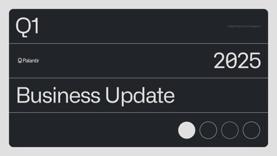

1 · Deck
2 · Viewer

Analytics for “Monthly Business Review”
Published on 15 July 2026
3:12 minutes
Median time
78%
Completion rate
128
Views
Viewer
Last opened
Time viewed
Channel breakdown
Device breakdown
“Monthly Business Review”
Time spent on presentation